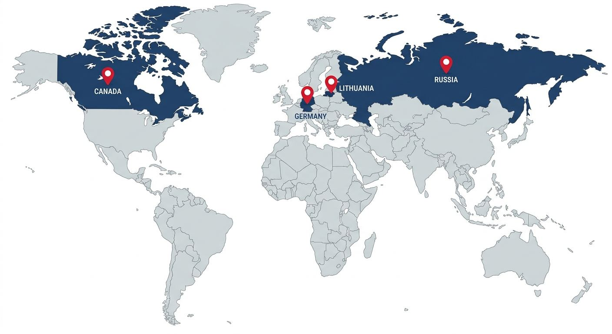

Rising demand, a supply base that hasn't kept pace
Sustainable building materials are pushing demand for expanded glass granulate faster than existing manufacturers can respond.
The gap between demand and capacity
Raw materials are not in short supply — specialized factories are.
Growing interest in sustainable building materials is forcing market players to seek new solutions, but existing manufacturers can no longer keep up with all the orders. Although raw materials are not in short supply, a lack of specialized factories limits the expansion of this sector worldwide.
Such a gap between growing demand and limited supply naturally encourages new investment in production capacity.
Key end-use markets
Expanded glass granulate is a lightweight, non-combustible, fully recycled material with uses well beyond traditional insulation.
Lightweight mortars and plasters
Market growth for lightweight mortars and plasters based on expanded glass granules is accelerating across the global construction sector. The broader expanded glass granules market is expanding at a CAGR of approximately 7%, while adoption within specialized lightweight mortars is growing even faster.
Fire-extinguishing granulate
Expanded glass granules excel at controlling Class D metal fires and lithium-ion battery thermal runaway due to their unique physical structure and high thermal performance.
3D printing
3D printing formulations made with expanded glass granules deliver high thermal insulation and an A1 fire rating while significantly reducing material weight. The spherical granule structure flows through print heads and extrusion nozzles without clogging, enabling low-density, warp-free structural elements. Demand is driven by construction automation, green building mandates, and sand shortages.
Lightweight construction materials
Driven by building energy efficiency mandates, green building certifications (LEED, BREEAM), and natural sand shortages, the global market for expanded glass aggregates is growing at approximately 7% CAGR. Using 100% recycled glass waste converts cullet into circular, high-value building products that reduce operational and embodied carbon.
Expanded glass producers by country
Established production is concentrated in only a handful of countries.

While existing producers struggle to keep pace with market needs, world demand for expanded glass granules and derived materials — lightweight mortars, insulation systems, advanced 3D printing mixtures — is growing rapidly. This surge is driven by increasingly stringent building energy efficiency requirements and green building standards, turning high demand into a significant structural deficit.
Canada, despite having advanced expanded glass plant infrastructure, faces major trade barriers when exporting its products to the U.S. construction sector.
Trade barriers and high transportation costs create a strategic opportunity for new players to deploy local technology and fill the resulting supply vacuum.
Take the first step — let's build together.
We'll cover raw material availability, market size, and whether it makes sense to start with a technical feasibility study.